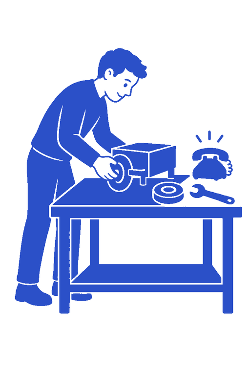
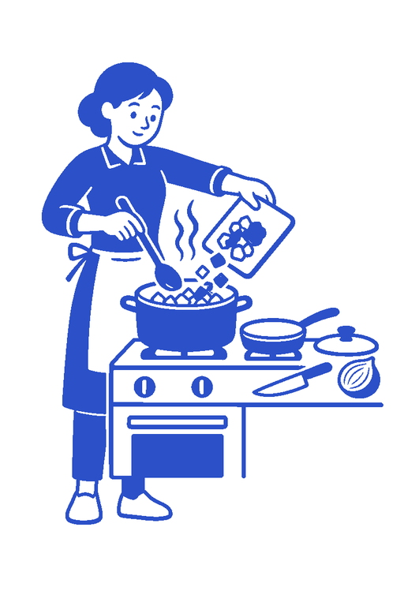
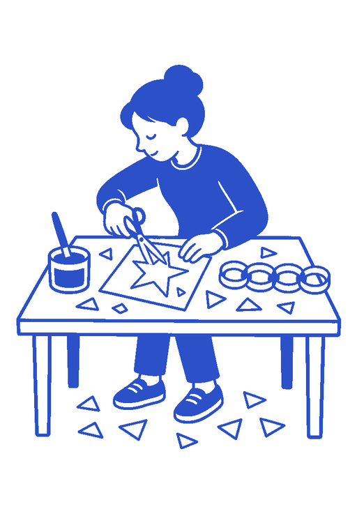

bezig zijn met
to be busy with, to be working on
drawnin the game
- Scene
- a person leans over a workbench, both hands fitting a plain wheel onto the short axle of a small half-built cart, elbows out, head low over the hands. Beside the cart a second wheel and a spanner wait. At the far end of the bench a telephone rings unanswered, three short lines above it, and the person does not look up. The two hands on the wheel are the clearest mark.
- Must read
- absorbed in a task, with no attention for anything else.
- Avoid
- the finished cart with tools going back into a box (klaar-met-klus); the person on the telephone (bellen met); a second person; overalls with a badge (werken bij); a big plan sheet and ruler (werken-aan-project).
- Pair / note
- Judgement: no drawing separates bezig zijn met from werken aan by the task alone. The cue used across this group is full hands and a body that has no attention left for anything else. The unanswered telephone is added to the pilot for that reason; drop it if it crowds the thumbnail.
- Example
- Ik ben bezig met een klus.
I am busy with a job. - Build
- Ik ben bezig met een klus
- Build
- Zij is bezig met een klus
- Check question
- Werkt de persoon aan een taak? Ja
- Alt text
- Iemand buigt over een werkbank en zet een wiel op een as.
bezig-zijn-met-klus.png · rij 15 · herkomst Docs/prepositions-art-a0-a2.md:65 (git)

bezig zijn met
drawnin the game
- Scene
- a person in an apron stands at a stove with two pans on it, stirring the larger pot with a wooden spoon in one hand and tipping chopped vegetables from a board into it with the other, eyes down on the pot. Steam rises in three plain lines; a lid, a knife and half an onion lie on the worktop beside the stove. The spoon in the steaming pot is the clearest mark.
- Must read
- busy cooking, both hands in use.
- Avoid
- standing back with arms folded watching the pans (letten op pannen); a diner at a table with knife and fork upright (wachten-op-eten); a baker's cap and a shop counter (werken-bij-bakker); a laid table with a host pulling out a chair (uitnodigen-voor-eten).
- Pair / note
- not letten op pannen
- Example
- Ik ben bezig met koken.
I am busy cooking. - Build
- Ik ben bezig met koken
- Build
- Hij is bezig met koken
- Check question
- Roert de persoon in een pan? Ja
- Alt text
- Iemand in een schort roert met een houten lepel in een dampende pan op het fornuis en schuift gesneden groente van een plank erbij.
bezig-zijn-met-koken.png · rij 130 · herkomst Docs/prepositions-art-a0-a2.md:619 (git)

bezig zijn met
drawnin the game
- Scene
- an adult sits at a table, bent close over the work, cutting a star out of a sheet of paper with scissors in one hand while the other hand turns the sheet. On the table stand an open glue pot with a brush in it and a half-made paper chain of four links; cut-off scraps lie scattered over the table and the floor. The scissors in mid-cut are the clearest mark.
- Must read
- busy with a craft project.
- Avoid
- a pen or laptop (werken-aan-verslag); the finished paper chain held up and admired (tevreden met, klaar met); an easel (werken-aan-schilderij); a wrapped box (blij met cadeau); a child in place of the adult.
- Pair / note
- not werken aan verslag
- Example
- Ik ben bezig met knutselen.
I am busy with crafts. - Build
- Ik ben bezig met knutselen
- Build
- Zij is bezig met knutselen
- Check question
- Is de slinger al af? Nee
- Alt text
- Een volwassene knipt aan tafel een ster uit papier; er staan een lijmpot en een halve papieren slinger, en overal liggen snippers.
bezig-zijn-met-knutselen.png · rij 131 · herkomst Docs/prepositions-art-a0-a2.md:620 (git)
bezig zijn met
drawnin the game
- Scene
- a living room in two halves. On the left the floor is strewn with cushions, a shoe, a stack of magazines and a ball; on the right the floor is clear and a shelf stands half filled. A person in the middle walks toward the shelf with a full open box on one hip, bending to scoop one more cushion up with the free hand. The figure between the strewn half and the clear half is the clearest mark.
- Must read
- busy tidying up, part done.
- Avoid
- a wholly tidy room with the person sitting down (klaar met); things tumbling out of the box (vallen-uit-doos); a suitcase (klaar-voor-vertrek); a broom or bucket (schoonmaken); moving boxes and a sofa with two people (bedanken-voor-hulp).
- Pair / note
- not klaar met klus
- Example
- Ik ben bezig met opruimen.
I am busy tidying up. - Build
- Ik ben bezig met opruimen
- Build
- Hij is bezig met opruimen
- Check question
- Is de hele kamer al netjes? Nee
- Alt text
- Iemand loopt met een volle doos op de heup door een kamer en raapt een kussen op; links ligt de vloer vol spullen, rechts is hij leeg.
bezig-zijn-met-opruimen.png · rij 132 · herkomst Docs/prepositions-art-a0-a2.md:621 (git)